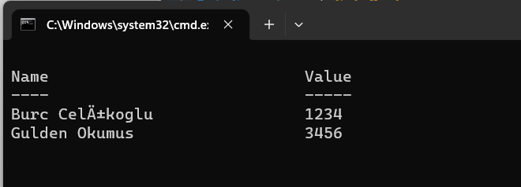

Powershell'in en güzel özelliklerinden birisi de bok-püsür her şeyin obje olarak döndürülmesi. Bu durum da dönen herhangi bir şeyin çok rahat bir biçimde okunup, başka bir process veya script içerisinde kullanımını kolaylaştırıyor çünkü objeler hiçbir sıkıntı olmadan variable olarak ifade edilebiliyorlar.
$file = dir → Direkt olarak tanımlayabiliyoruz.
$file | Get-Member: Bunu daha evvelden konuştuk. file objesinin kullanabileceği bütün metodları listeliyor.
$file.BaseNames: Metodlara bu şekilde erişiyoruz.
$file.BaseNames[index]: Hatta bu şekilde bile erişebiliyoruz.
------------------------------------------------------------------------------------------------------------------------------------------------------------------------------------------------------
SORT:
Ufak bir ödev: Sort ile ilgili dökümanı online bul ve nasıl yapıldığını öğren!
help sort -online: Dökümanı bul!
Burada biraz durup oyalanalım:
mkdir: Bu komut Powershell içerisinde de mevcut. Directory yaratabiliyor.
New-Item -Path (full_path) -type file(veya ne yaratacaksan) -name “(ismi).txt(vs..)”: Bu şekilde yeni dosya yaratıyoruz.
Get-Content -Path ‘full path’: Full Path kullanarak txt dosyasının içeriğini al. Bu komut her haltı açar. Klasör, dosya vs...
Get-Content -Path ‘full path’ | Sort-Object: Dosya içerisinde olan şeyleri default olarak sıralar.
Get-Content -Path ‘full path’ | Sort-Object -Unique: Aynı isimde olanları atar. Default olarak büyük harf olanları tutuyor.
----------------------------------------------------------------------------------------------------------------------------------------------------------------------------------------------------------
FILTRELEME:
1)WHERE(?): SQL'da olduğu gibi bir komut. Liste içerisinde arama yapmayı sağlıyor.
2)WHERE(?): Komutu ile loop yaratılabilir.
$file = dir → file objesini buluduğumuz directory'e eşledik.
$files | where {$_.length} -gt 25 → burada where komutu, süsülü parantez içerisinde $ ile kullanılırsa loop yarartır. $ işareti her bir eleman demektir.
$files | where {($_.length -gt 25) -and (başkabişey)} → genel tanımı bu şekilde.
-----------------------------------------------------------------------------------------------------------------------------------------------------------------------------------------------------------
LOOPS:
1)FOREACH LOOPS:
1..10 | foreach {$_*2}
1..10 | foreach {"This loop number is : $_"}
1..10 | foreach {if($_%2){"This shit is odd: $_"}}
ARRAYS:
Powershell içerisinde array tanımlama:
$strComputers = @("Server1", "Server2", "Server3")
$strComputersArray erişimi her zamanki mantık ile yapılabiiyor:
$strComputers[i]: şeklinde indexleme yapılarak çağırılabilir.
$strComputers = @("Server1","Server2","Server3")
$strComputers[0]
#Metodlarını görebiliriz:
$strComputers | Get-Member
Birbirine birleştirmesi de kolay:
$strComputers = @("Server1", "Server2", "Server3")
$strComputers2 = @("Server4", "Server5", "Server6")
$strComputers3 = $strComputers + $strComputers2
$strComputers3
$strComputers3.Length
$strComputers3 | foreach{$_.length}
---------------------------------------------------------------------------------------------------------------------------------------------------------------------------------
HASH TABLES(DICTIONARIES):
@{"key1" = “value1”;
“key2” = “value2”
}
$empNumbers = @{
"Burc Celikoglu" = 1234;
"Gulden Okumus" = 3456}
$empNumbers
#Elemanlari Ara:
$empNumbers["Burc Celikoglu"]
$empNumbers["Gulden Okumus"]
#Tekrar değer ver:
$empNumbers["Burc Celikoglu"] = 00000
$empNumbers
#Kaldırma:
$empNumbers.Remove("Gulden Okumus")
$empNumbers

Mantığı dictionary gibi yürüyor. Her save esnasında sıralaması değişebilir.